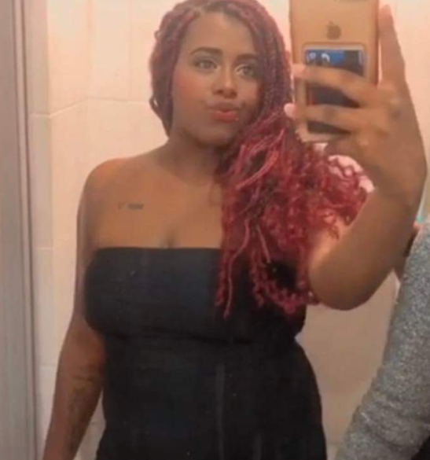

Alexsandro Josué
Ana Clara
Andrei Oliveira

Douglas Marques
Erick Rubio
Julya Magalhães
Kauan Silva

Leticia Santana
Luiz Fellipe
Maria Luiza

Mylena Botão
Raissa da Silva
Rayssa Costa

Ronald Carvalho

Ronald dos Santos

Stefani Fernandes
Thamyres Anchieta
Thifany Santo
Desenvolvedor
No Egito antigo, os “escribas” ou escrivães eram pessoas responsáveis pela leitura e produção dos textos nos papiros, espécies de plantas usadas desde 2500 a.C., as quais, por sua vez, constituíam um grande rolo de folhas pregadas umas às outras. Foi por esse motivo, do demasiado volume, que surgiram os pergaminhos, suportes de peles de animais (carneiro, cabra, ovelha, etc.), muito utilizados pelos “monges copistas” da Idade Média. O livro, um produto intelectual, surgiu da necessidade dos povos de guardar o conhecimento e passa-los de geração em geração.
Nesse contexto, importante destacar que a maioria das pessoas, não sabiam ler ou escrever, o que dificultava ainda mais a disseminação desse conhecimento, guardado nas bibliotecas a “sete chaves”.